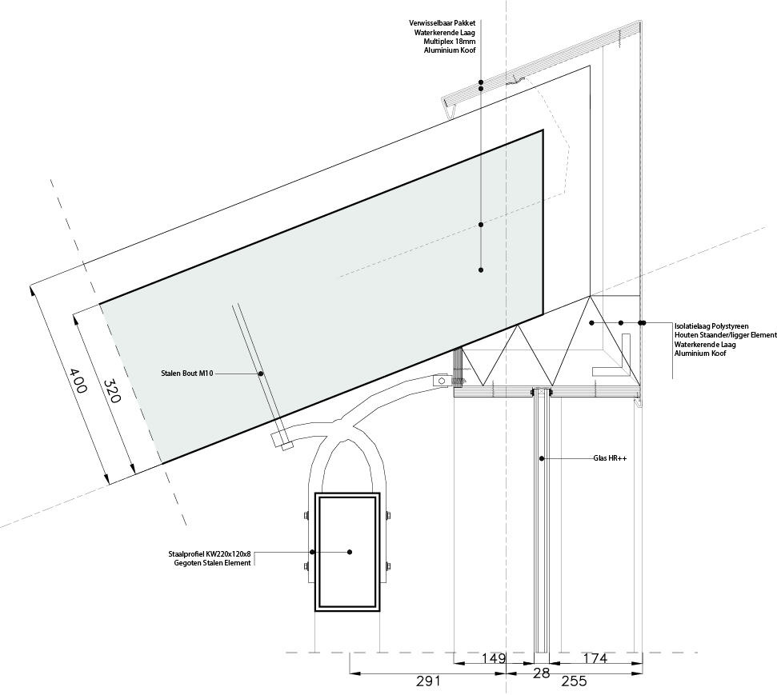
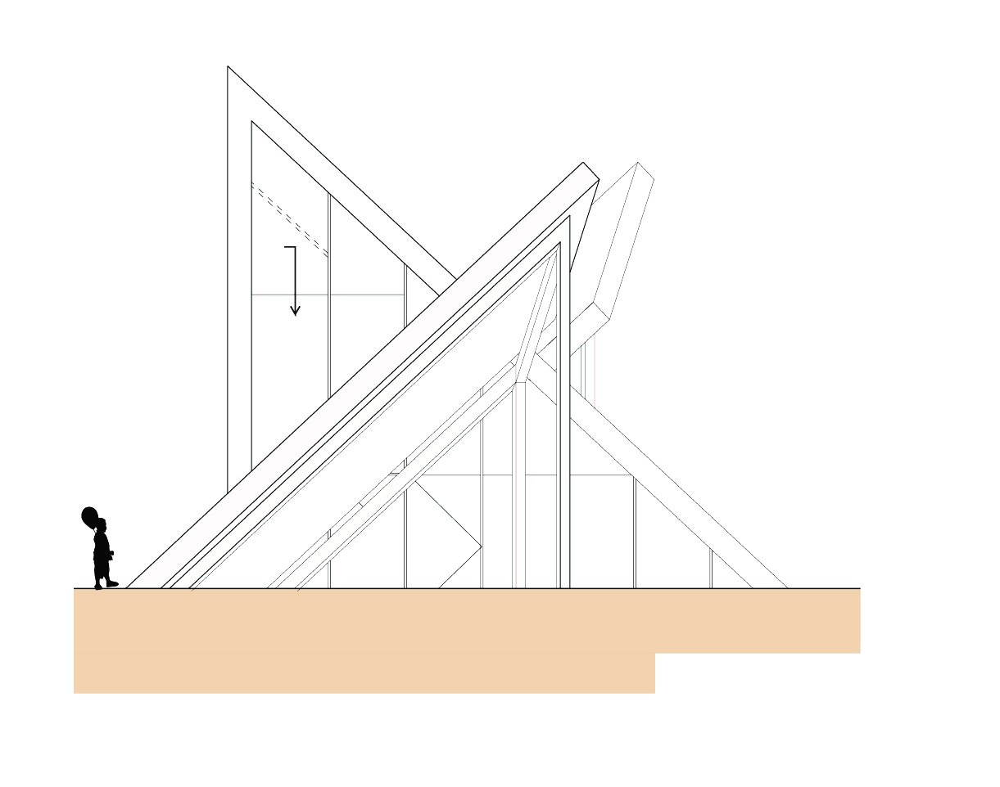
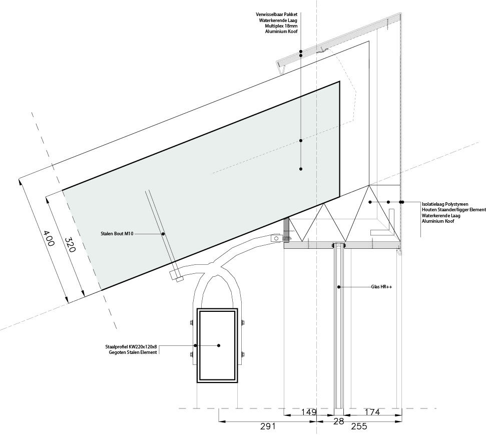
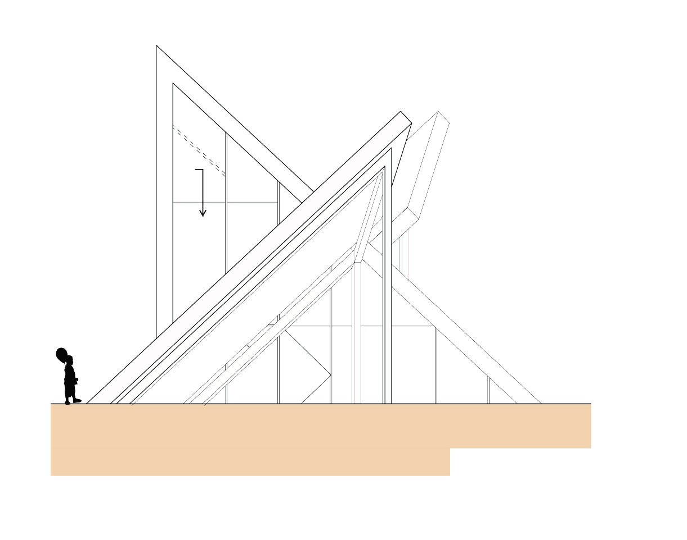
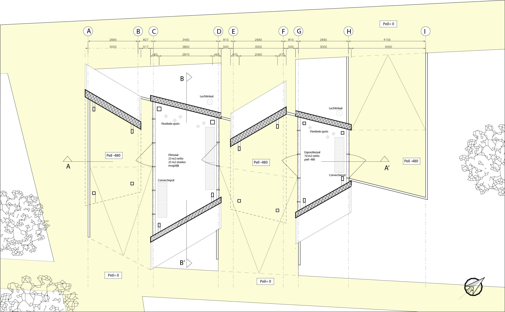
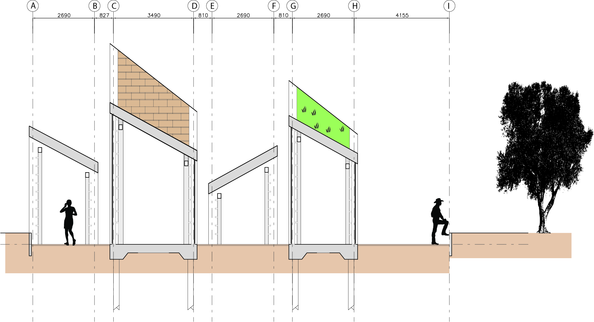
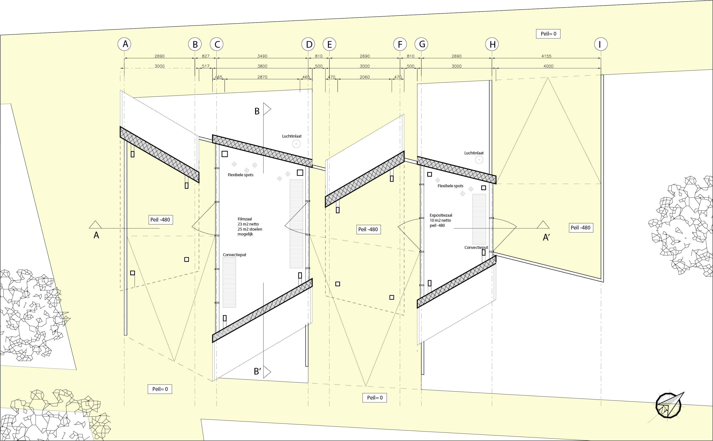
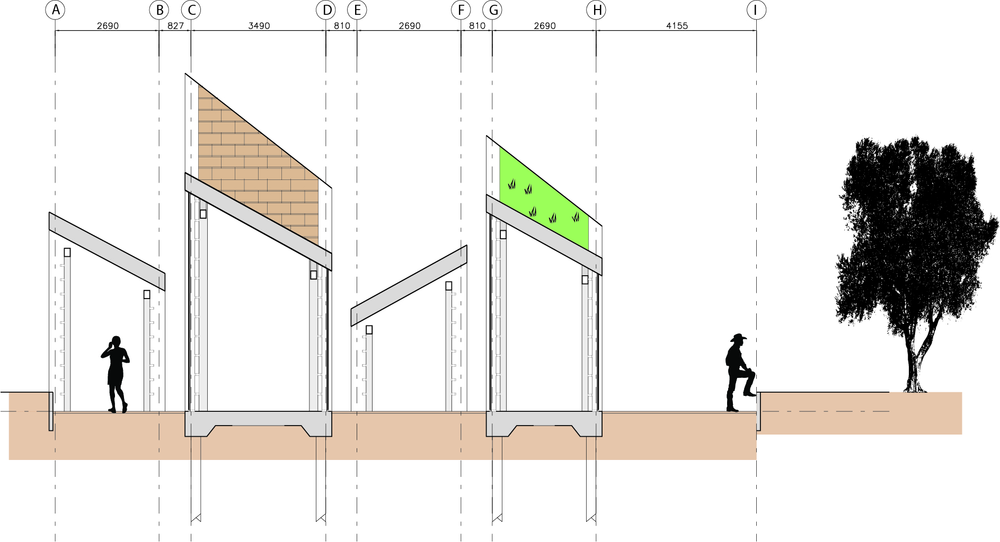

Facade Testing Pavilion
Delft / Public / 70 m²
This pavilion is one of three structures in an exhibition for and about the faculty of architecture in the TU Delft Botanical Garden. The building is designed to put new faÁade systems to the test, these can be student projects or part of research. The design consists out of four testsections, providing for vertical and angled surfaces. The detailing can handle a multitude of faÁade packages up to a thickness of 400 mm. The two inside spaces are used for exhibits and presentations, but they can also be heated and measured in a controlled manner for experiments on heat loss.
 



 


